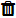
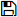
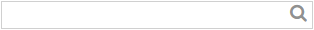

Changes the password entered when starting cotodesign Template and cotodesign Order Viewer.
In order to improve security, periodically change the password.
Template List and Print Layout List |
These are the lists of the "templates" and "print layouts" registered to cotodesign.
Buttons in the upper-right corner of the screen

Changes the password entered when starting cotodesign Template and cotodesign Order Viewer.
In order to improve security, periodically change the password.

Displays the online help file.
LANGUAGE

Changes the display language.
Template List

Creates a new template.
• Related item >> Determining the Size and Printing Method for a Template

Edits the template.

Imports an SVG file and adds a new template.
For the SVG file specifications, see the "cotodesign Setup Guide."

Displays the template preview.
The settings cannot be changed.

Deletes the template.

Imports a template file and uploads it to the server.

Saves the selected template.

Enter a part of a template name to filter the template files that are displayed in the template list.
NAME
Displays the file name of the registered template.
Template file names are subject to naming rules and indicate a period-separated layer configuration.
TYPE OF PRINTING
When printing on a printer, select "Color Print." When using a laser decorator, select "Foil Print." When using a metal printer, select "Metal Imprint." When using a cutting machine, select "Cutting."
Click "▼" and select "TYPE OF PRINTING" to filter the template files that are displayed in the template list.
SPECIAL EFFECT
When "SPOT COLOR" is used to create a template file, an icon corresponding to the special effect is displayed.
Print Layout List

Creates a new print layout.

Changes the print layout settings.

Imports an SVG file and adds a new print layout.
For the SVG file specifications, see the "cotodesign Setup Guide."

Displays the print layout preview.
The settings cannot be changed.
Deletes the print layout.

Imports a print layout file and uploads it to the server.
Saves the selected print layout.
CONNECT
Selects the print layout in which to place the template.
Each template requires at least one print layout for its placement destination. Templates that have not been placed in a print layout cannot be printed.
Multiple print layouts can be selected for the placement destinations of a single template. However, templates and print layouts can only be combined if they have the same type of printing. For example, templates dedicated for use with color printing can only be associated with print layouts for color printing. Use cotodesign Print Manager to set which print layouts in which to place ordered templates.
DEFAULT
Selects the print layout in which templates are automatically placed when the [Automatic Order Layout] check box is selected in cotodesign Print Manager.
NAME
Displays the file name of the print layout.
TYPE OF PRINTING
When printing on a printer, select "Color Print." When using a laser decorator, select "Foil Print." When using a metal printer, select "Metal Imprint." When using a cutting machine, select "Cutting."
Click "▼" and select "TYPE OF PRINTING" to filter the files that are displayed in the print layout list.
SAVE
Saves on the server the placement destination settings of the template and print layout.
Copyright (C) 2017-2019 Roland DG Corporation